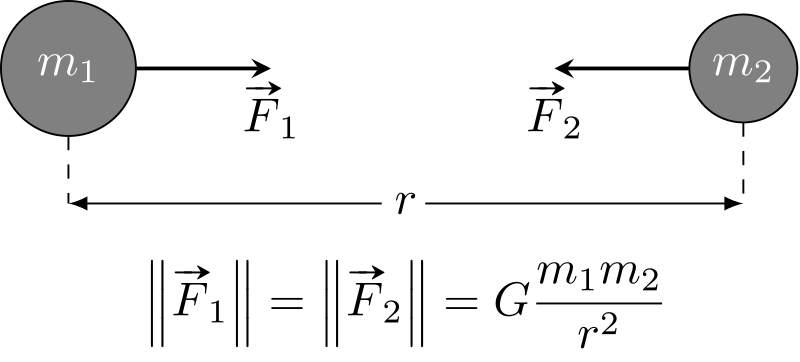

« A person that much interested in science is going to neglect his social life somewhat, but not completely, because that isn't healthy either. So one has to work it out according to one's own inclinations, how one wants to proportion these things. »
Clyde W. Tombaugh
Bien que les hommes observent le ciel depuis des millénaires, la découverte de Pluton est plutôt récente. Elle n'a pas été découverte par hasard ou avec un simple téléscope. On théorisait l'existence d'un neuvième planète dans le Système Solaire, mais des outils étaient nécessaires pour trouver cette petite planète. De plus, la photographie ci-contre est très récente. Au début de son histoire, Pluton n'était qu'un point dans le ciel nocturne. Son exploration ne fait que commencer et les connaissances que nous avons d'elle ont été permise grâce à une sonde de la Nasa dont nous parlerons dans une autre page.
Mais revenons à nos moutons et commençons par le commencement !
L'Observatoire Lowell
L'histoire commence avec la théorie d'une potentielle neuvième planète dans le Système Solaire. Nous sommes au début du XXème siècle, les avancés technologiques permettent de plus en plus de découverte aux hommes et ceux-ci ne cessent de chercher dans le ciel. Ils comprennent certaines choses, tandis que d'autres restent inexpliquées. Et c'est à partir d'un mystère que naît l'histoire de Pluton. A l'époque, les hommes avaient connaissances de huit planètes dans le Système Solaire : Mercure, Vénus, la Terre, Mars, Jupiter, Saturne, Uranus et Neptune. Cependant, quelque chose n'allait pas. La trajectoire de Neptune, autrement dit le chemin qu'elle parcourt, montrait des anomalies si l'on suivait les calculs purement théorique. En effet, on observait dans le ciel que quelque chose, grâce à l'attraction gravitationnelle, tirait légèrement Neptune vers l'extérieur. Or, seul un corps imposant et suffisamment lourd était capable de cela. On rappelle que l'attraction gravitationnelle se calcule (de façon simplifiée) avec la formule :
Ainsi est née l'idée qu'il pouvait exister une planète transneptunienne. Cette idée trouva un chemin jusqu'à l'esprit d'un astronome amateur et homme d'affaire nommé Perceval Lowell. Passionné d'astronomie et rêvant d'explorer les étoiles, il entreprit de construire un observatoire près de Flagstaff en Arizona. Son but premier n'était pas de découvrir Pluton, mais de faire des recherches sur la planète rouge, Mars. Il embaucha cependant un jeune astronome dont la mission était de chercher cette neuvième planète.
De nos jours, l'observatoire est visitable et l'on y trouve encore la lunette originale, que l'on peut voir sur la photographie ci-dessous avec Perceval Lowell. Le bouton ci-dessous mène à son site internet, où l'on retruve l'intégralité de son histoire et ses découvertes (Pluton et d'autres découvertes).
Clyde W. Tombaugh
Clyde William Tombaugh est l'homme qui a découvert Pluton. Né en Illinois en 1906 dans une famille paysanne, il est passionné d'astronomie depuis son enfance, il se construit un télescope pour faire des croquis des planètes. Sur la photographie ci-contre, on peut le voir avec un des télescope qu'il s'est construit.
Connaissant de nom l'Observatoire Lowell, il tente sa chance en envoyant des croquis qu'il a réalisés à V.M. Slipher, directeur de l'obsrevatoire à l'époque. Clyde Tombaugh est alors embauché et se voit confier pour mission de fouiller le ciel à la recherche d'une neuvième planète.
Pour mener à bien sa mission, Tombaugh invente une machine appelée "comparateur à clignotement". Celle-ci permettait de prendre plusieurs photographies d'une partie du ciel avec un intervalle de temps. Il fallait ensuite comparer les images obtenus et les positions des objets qu'on y voyait dessus. Les étoiles étaient extrêmement éloignées de la Terre, leur position ne changeait pas. Tout autre objet dont la position changeait était donc suffisamment proche pour faire partie du Système Solaire. C'est ainsi que le 19 février 1930, un an après avoir été embauché, Tombaugh découvre la fameuse neuvième planète, intitulée "Planète X" à l'époque.

Quel nom pour la Planète X ?
Qui dit planète qui nouveau nom. Un concours est alors lancé pour trouver un nom susceptible de convenir. C'est une jeune anglaise de 11 ans, nommée Venetia Burney qui remporta le concours. Son grand-père connaissant l'observatoire, il lui en parla et s'y inscrit. Elle pensa alors à Pluton, non seulement en rapport au nom du dieu des Enfers dans la mythologie romaine, mais aussi en hommage à Perceval Lowell (les deux premières lettres de Pluton sont ses initiales), décédé 14 ans auparavant.
C'est ainsi que notre Planète X se voit attribuer le nom que nous lui connaissons aujourd'hui.